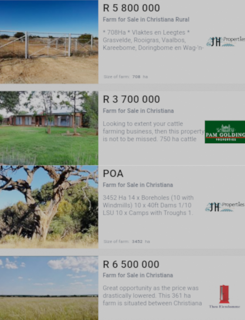

Christiana
Is an agricultural town of about 3,000
inhabitants on the banks of the Vaal River in North West province,
South Africa. The town is located on the N12 national route between
Bloemhof and Warrenton, on the way to Kimberley (Northern Cape).
When diamonds were discovered in the Vaal River in the 1870s the former Transvaal Government established a
settlement on the banks of the river in 1870, in an attempt to control and
alleviate land disputes over diamond discoveries further down the Vaal River.
This town was established on the farm Zoutpansdrift and named Christiana,
after the only daughter of President Pretorius of the old Transvaal.
In 1997, diamonds were rediscovered along
the banks of a farm on the Free State side of Christiana.
Economy
The town contains one of the biggest diggers' bells ever to exist in the world.
The bell is currently underwater in the Vaal River as it once sank and ended
in the drowning of several diggers. There were a few attempts to get the diggers'
bell out, as it is said that there are diamonds still in it, but it was in
vain as it is surrounded by too much mud.
Christiana is one of the corners of the "Maize Rectangle", with the mainstay
of the economy being the production of maize, potatoes, onions, sorghum,
groundnuts and beef. The main farmers in the area are the de Beer's and
Callender-Easby's. South Africa's top horse stud, Callaho Warmblood
Sport Horses, can be found near Christiana.